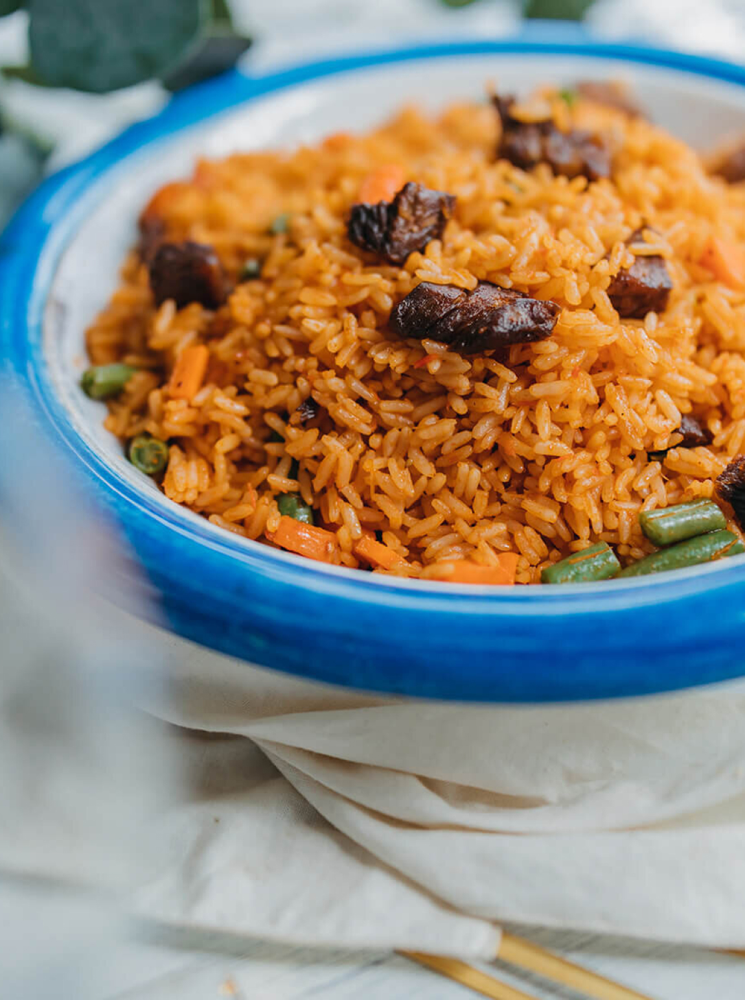

Cameroonian Jollof Rice - Ingredients
The delicious and fragrant rice dish known as Cameroonian Jollof Rice is a blend of several spices and flavors from West Africa. It is acknowledged for having a rich, somewhat spicy flavor and is a favorite both in Cameroon and worldwide. In order to create an enjoyable and fulfilling dinner experience, this flavorful rice dish is often served with a range of delicious side dishes.
Ingredients
- 1/2 large red bell pepper, cut into small pieces
- 1 medium vine tomatoes, cut into small pieces
- 1/2 red onion, quartered
- 1 red scotch bonnet chillies, quartered
- 1 1/2 garlic cloves, smashed
- 12 1/2 g fresh ginger, peeled and roughly chopped
- 50ml water
- 1 tbsp paprika
- 2 tbsp cayenne pepper (adjust to your spice preference)
- 75ml vegetable oil
- 1/2 red onion, finely chopped
- 75 g double concentrated tomato purée
- 1/2 tbsp curry powder
- 1 tsp dried thyme
- 1 1/2 chicken stock cubes
- 1 dried bay leaves
- 300ml water
- 300 g white basmati rice
- 1/2 large red bell pepper, cut into small pieces
- 1 medium vine tomatoes, cut into small pieces
- 1/2 red onion, quartered
- 1 red scotch bonnet chillies, quartered
- 1 1/2 garlic cloves, smashed
- 12 1/2 g fresh ginger, peeled and roughly chopped
- 50ml water
- 4 tbsp paprika
- 2 tbsp cayenne pepper (adjust to your spice preference)
- 150ml vegetable oil
- 1 red onion, finely chopped
- 150 g double concentrated tomato purée
- 1 tbsp curry powder
- 2 tsp dried thyme
- 3 chicken stock cubes
- 2 dried bay leaves
- 600ml water
- 600 g white basmati rice
- 2 large red bell pepper, cut into small pieces
- 4 medium vine tomatoes, cut into small pieces
- 2 red onions, quartered
- 4 red scotch bonnet chillies, quartered
- 6 garlic cloves, smashed
- 50 g fresh ginger, peeled and roughly chopped
- 200ml water
- 4 tbsp paprika
- 2 tbsp cayenne pepper (adjust to your spice preference)
- 300ml vegetable oil
- 2 red onions, finely chopped
- 300 g double concentrated tomato purée
- 2 tbsp curry powder
- 4 tsp dried thyme
- 6 chicken stock cubes
- 4 dried bay leaves
- 1200ml water
- 1200 g white basmati rice